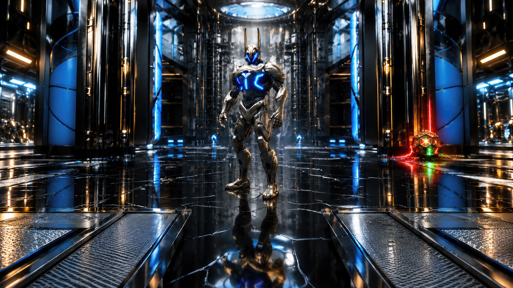

Field Observation
Grapi investigates a red-and-green alien orb positioned against the right wall on Earth 1. The orb may serve as an alien relay inside the tower complex.
 ©
©
GENEZYS ARCHIVE · Legionnaire
Aeon Controller
Identity & combat record
Archive node 01 / 04
Archive record
Grapi is one of the few Legions of the Exalted Order who can stop time, if only for a heartbeat. The Epoch Cascade freezes a single enemy and lands one devastating blow before the moment ends. Grapi swore the Still Hour long ago and has spent every year since preparing to hold it.
Combat signature
Rips sequence from the moment: Stuns 1 enemy for 1 round and deals 220 damage.
Genezys 03:07 ™&©2026LEGIONS
Field intelligence
Archive node 02 / 04
FIELD REPORT // ORB CONTACT

Field Observation
Grapi investigates a red-and-green alien orb positioned against the right wall on Earth 1. The orb may serve as an alien relay inside the tower complex.
Environment
Object Analysis
Key Findings
Restricted visual records
Archive node 03 / 04

Motion archive
Archive node 04 / 04
Motion record not yet recovered